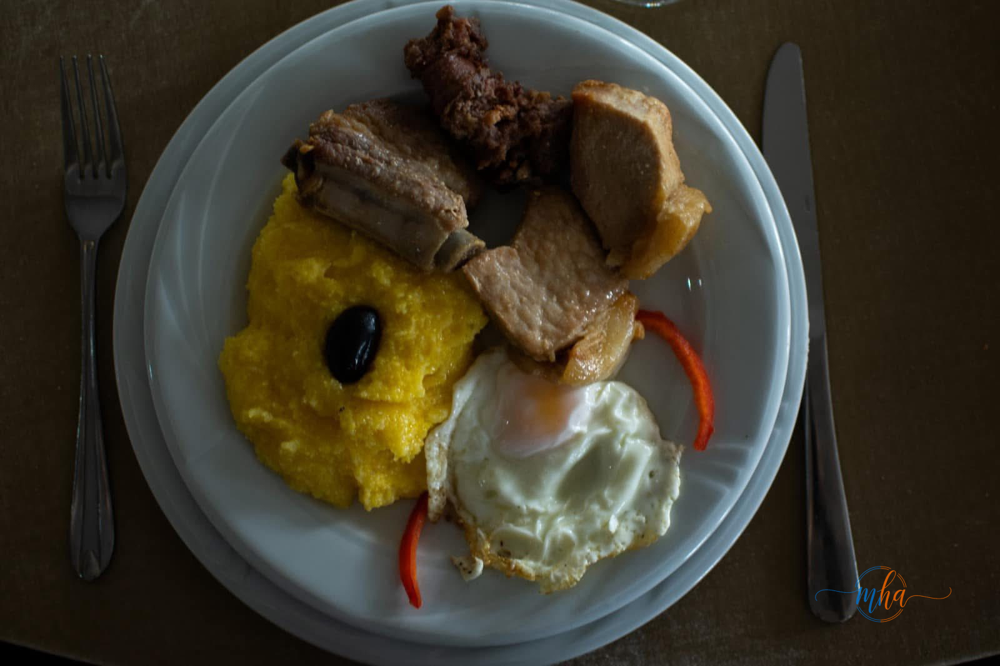
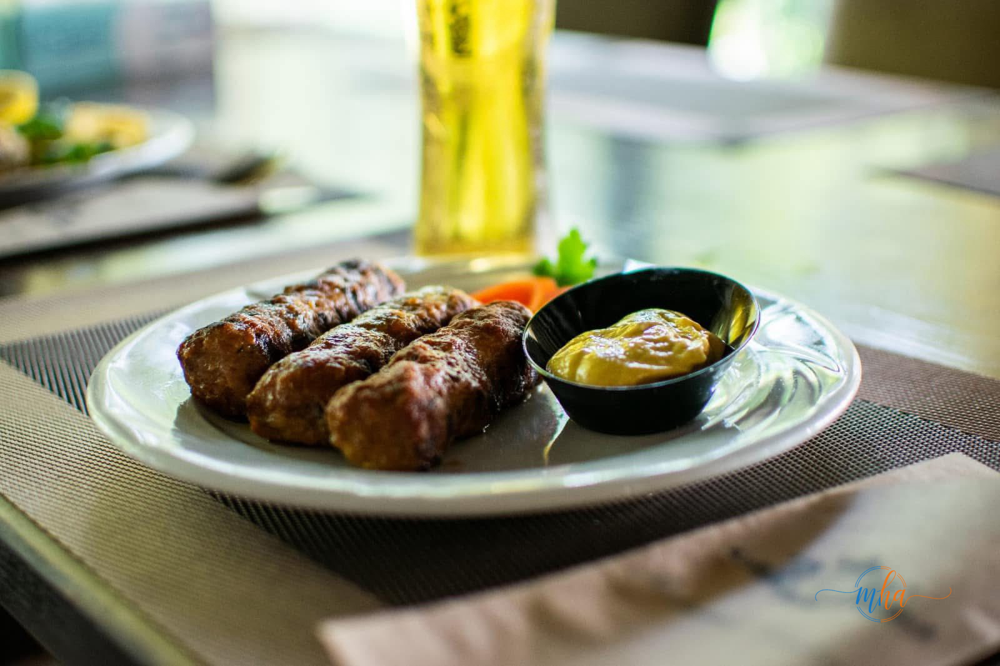
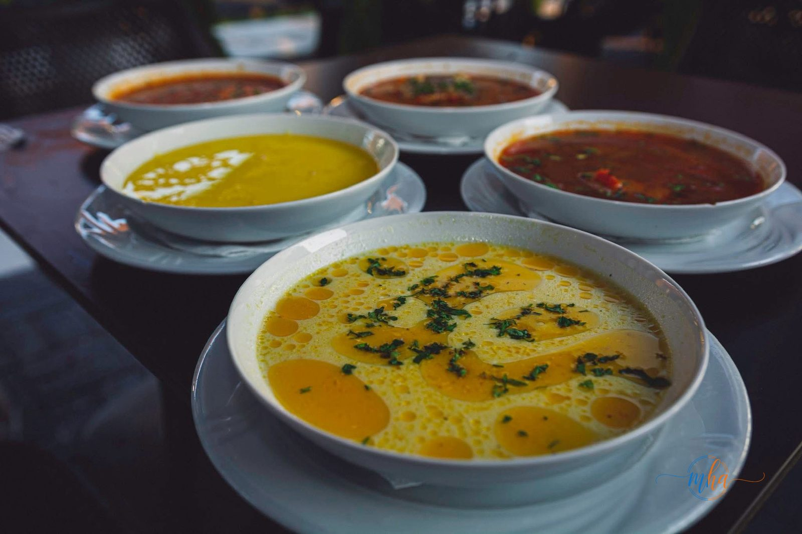
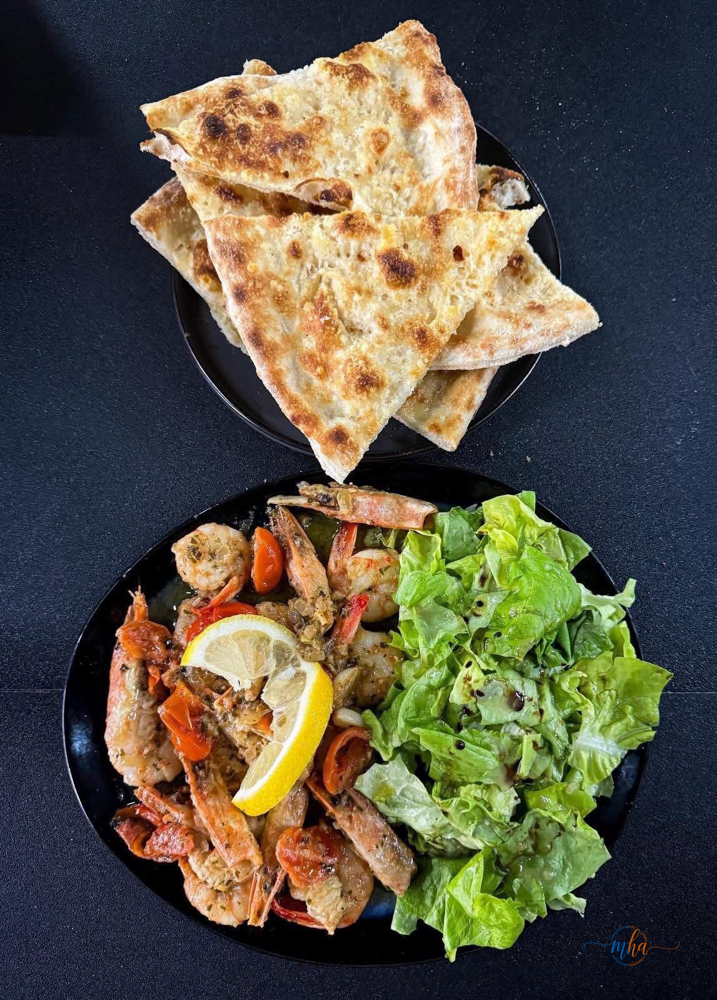

Județul Mehedinți are o tradiție gastronomică bogată, influențată de bucătăria oltenească, de vecinătatea cu Dunărea și de moștenirea culturală a zonei. De la tochitură cu mămăligă și ouă prăjite la ciorbe acrișoare preparate după rețete transmise din generație în generație, mâncărurile tradiționale din Mehedinți sunt o experiență culinară autentică pe care orice vizitator trebuie să o trăiască.
Am alcătuit un ghid gastronomic complet — restaurante recomandate din Drobeta-Turnu Severin, preparate tradiționale care nu trebuie ratate și sfaturi practice pentru o experiență culinară de neuitat în inima Olteniei.
Mâncăruri tradiționale din Mehedinți pe care trebuie să le guști
Tochitură oltenească cu mămăligă și ouă

Preparatul emblematic al bucătăriei oltene, tochitură este un amestec de carne de porc (ficat, rinichi, inimă, carne) prăjită în untură sau ulei, servit alături de mămăligă caldă, ouă prăjite și măsline. Fiecare gospodărie și fiecare restaurant are rețeta proprie, cu variații de condimente și tipuri de carne. O porție consistentă de tochitură cu mămăligă reprezintă gustul autentic al Mehedinților.
Mici — aromă de grătar autentic

Micii sunt nelipsiți din orice restaurant sau terasă din Mehedinți. Preparați dintr-un amestec de carne de vită, porc și miel, cu condimente specifice (usturoi, coriandru, cimbru), micii buni se recunosc după crusta ușor crocantă și interiorul suculent. Se servesc cu muștar și pâine proaspătă, alături de o bere rece — combinația perfectă pentru o zi de vară la Dunăre.
Ciorbe și supe tradiționale oltene

Bucătăria oltenească excelează în supe și ciorbe preparate lent, cu ingrediente proaspete. Cele mai populare în restaurantele din Mehedinți:
- Ciorbă de burtă — preparată după rețeta tradițională, cu smântână, usturoi și oțet
- Ciorbă de perișoare — cu carne de porc tocată și legume de sezon
- Supă de pui cu tăiței de casă — simplu și reconfortant
- Ciorbă de fasole cu ciolan — consistentă, perfectă pentru zilele răcoroase
- Borș de pește din Dunăre — specific zonei, cu pește proaspăt prins local
Preparate din pește și fructe de mare

Dată fiind poziția pe Dunăre, peștele a fost dintotdeauna o componentă importantă a bucătăriei din Mehedinți. Restaurantele din Drobeta servesc atât preparate tradiționale din pește de Dunăre (somn, crap, șalău), cât și preparate moderne din fructe de mare. Cele mai apreciate preparate:
- Somn la grătar — peștele gras și suculent al Dunării, prăjit pe grătar cu lămâie și usturoi
- Crap la cuptor cu legume — rețetă tradițională cu rozmarin și vin alb
- Borș de crap — ciorbă acră specifică zonei dunărene
- Creveți la tigaie cu sos de usturoi și salată verde
- Plăcinte și lipii cu brânză — gustare tradițională care însoțește orice masă
Restaurante recomandate din Drobeta-Turnu Severin
Restaurant Cambera
Unul dintre cele mai cunoscute și apreciate restaurante din Drobeta-Turnu Severin, Restaurant Cambera îmbină bucătăria tradițională oltenească cu preparate internaționale, servite într-un cadru elegant. Restaurantul dispune de sală interioară generoasă și terasă, fiind destinația preferată pentru mese de familie, evenimente și întâlniri de afaceri. Meniul include preparate tradiționale românești, grătar, pește și o selecție variată de supe și ciorbe de casă.
📍 Drobeta-Turnu Severin
🍽️ Specific: bucătărie românească tradițională, grătar, pește, international
👨👩👧 Ideal pentru: mese de familie, evenimente, grupuri
Restaurante cu specific dunărean
Drobeta-Turnu Severin are avantajul unic al proximității față de Dunăre, ceea ce înseamnă că restaurantele de pe malul fluviului sau din apropierea portului servesc pește proaspăt pescuit local. Căutați restaurantele și terasele din zona Portului și a malului Dunării pentru o experiență gastronomică completă — mâncare bună cu priveliște spre fluviu.
Pensiuni și restaurante cu specific local din județ
Dacă explorezi județul Mehedinți dincolo de Drobeta, nu rata pensiunile și restaurantele din zona montană și dunăreană care servesc preparate tradiționale gătite în casă:
- Zona Orșova — restaurante cu specific dunărean și pește proaspăt
- Zona Baia de Aramă — pensiuni cu bucătărie tradițională de munte: sarmale, tochituri, ciorbe de pui de casă
- Zona Vânju Mare — crame cu preparate locale și degustări de vinuri Mehedinți
- Zona Strehaia — restaurante cu meniu oltenesc tradițional
Vinurile și băuturile tradiționale din Mehedinți
Județul Mehedinți este parte din podgoria Mehedinți-Severin, cu o tradiție viticolă de secole. Zona Vânju Mare produce vinuri albe și roșii apreciate în toată Oltenia. Soiurile locale — Fetească Albă, Fetească Neagră, Riesling Italian, Sauvignon Blanc — se potrivesc perfect cu preparatele tradiționale din regiune.
Vinuri recomandate din Mehedinți
- 🍷 Fetească Neagră — vin roșu cu corp, perfect cu tochitură și grătar
- 🥂 Fetească Albă — vin alb sec, ideal cu pește și preparate ușoare
- 🍾 Sauvignon Blanc — proaspăt și aromat, recomandat cu fructe de mare
- 🍺 Berea artizanală — în creștere în Drobeta, se servește cu mici și grătar
- 🥃 Țuica de Mehedinți — aperitivul tradițional local, produs din prune
Piețele și locurile unde găsești produse locale
Dacă preferi să gătești sau să cumperi produse tradiționale, Mehedinții au piețe agroalimentare bine aprovizionate cu produse locale:
- Piața Agroalimentară Drobeta-Turnu Severin — cea mai mare piață din județ, cu legume, fructe, lactate și mezeluri locale
- Piața din Strehaia — produse tradiționale din zona de câmpie
- Piața din Orșova — pește proaspăt din Dunăre și produse locale
- Piețe săptămânale în comunele județului — brânzeturi, ouă de țară, miere, zarzavaturi de grădină
Sfaturi pentru o experiență gastronomică autentică în Mehedinți
- 🍽️ Cere specialitatea casei — fiecare restaurant are preparatul lui de suflet, întreabă chelnerul
- 🐟 Pește proaspăt — cere să afli dacă peștele e local (Dunăre) sau de crescătorie
- 🌿 Produse de sezon — vara, legumele și fructele locale sunt la cel mai bun gust
- 🍷 Vinul local — alege un vin din podgoria Mehedinți-Severin pentru o experiență completă
- 📅 Rezervă în avans la restaurantele populare, mai ales vinerea și sâmbăta seara
- 🏘️ Ieși din oraș — cele mai autentice preparate tradiționale se găsesc adesea la pensiunile din sate
Concluzie
Gastronomia din Mehedinți este una dintre cele mai autentice din Oltenia — simplă, consistentă și preparată cu ingrediente locale de calitate. Tochitură cu mămăligă, mici la grătar, ciorbe de casă și pește proaspăt din Dunăre sunt experiențe culinare care te fac să revii mereu în această parte a României.
Fie că ești localnic sau turist, o masă bună în Drobeta-Turnu Severin sau în împrejurimile județului este întotdeauna un motiv în plus pentru a iubi Mehedinții. Poftă bună!